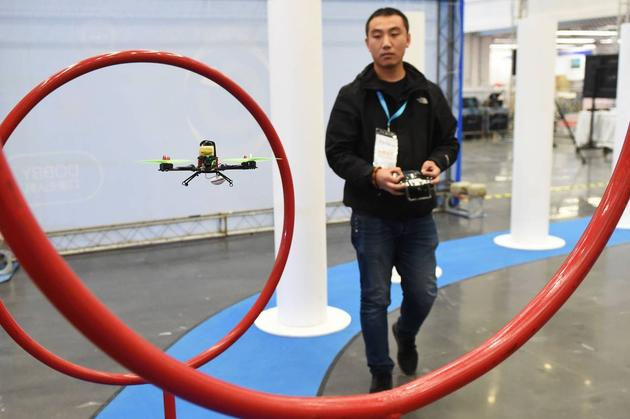

导语：由于智能手机引发的移动互联网浪潮已经接近尾声，而新一轮科技趋势的来源尚不明了，所以风险投资家纷纷开始分散投资，希望能够抓住“明日之星”。

美国《华尔街日报》网络版今天撰文称，由于智能手机引发的移动互联网浪潮已经接近尾声，而新一轮科技趋势的来源尚不明了，所以风险投资家纷纷开始分散投资，希望能够抓住“明日之星”。
以下为文章全文：
风险投资家总是在寻找未来的重大趋势。最近，他们又开始争相物色“明日之星”了。
现在距离智能手机掀起的创业淘金热已经过去近10年，但硅谷投资者们仍未确定真正能像智能手机一样催生大批创业公司、带来巨额回报的新产品。
风险投资家正在各个趋势并不明朗的科技领域下注，包括无人驾驶汽车、无人机、人工智能、虚拟现实，甚至食品领域。
由于寻找“明日之星”的意愿十分迫切，加之投资者手中持有大量现金，极易引发鲁莽的投资。截至9月，风险投资公司今年以来已经累计融资340亿美元——追评2007年以来的最高水平。
Draper Fisher Jurvetson公司的风险投资家史蒂芬·尤尔韦松（Steve Jurvetson）表示，他的公司支持了农业、机器人、人工智能和航空航天等领域的企业。“在所有领域撒钱会损失巨额资金。”他说，“但最大的机会都在这些领域里面。”
自从1960年代以来，这一幕已经在硅谷多次上演。风险投资公司Accel Partners联合创始人、老牌风险投资家阿瑟·帕特森（Arthur Patterson）表示，这种高潮与低谷交提的投资周期往往包括8年的增长和6年的回撤——有的人将这种周期称作“帕特森周期”。
 个人电脑和智能手机出货量年度变化比较
个人电脑和智能手机出货量年度变化比较
速度更快、价格更低的电脑芯片推动了科技创新周期的更迭，而利润也从大型机转向PC和智能手机，以及这些设备孕育的软件产品。每到周期交替的时候，投资者的前景都是不确定的，而风险投资家的工作就是寻找技术变革趋势，捕捉“明日之星”。
硅谷在1970年代进入萧条，但1980年代的PC革命拯救了它，并催生了英特尔、苹果和微软等公司。到了1990年代，随着PC增速放缓，风险投资家开始转向风险更小、科技含量更低的领域，其中也包括零售业。
随后，万维网重新进入风险投资家的视野。1995至2000年间，风险投资总额近2000亿美元，超过1000家公司上市，其中就包括亚马逊和雅虎。
经过了.com泡沫的破灭，风险投资家基本都已撤离互联网公司。有的在清洁能源和纳米科技上展开了糟糕的投资，错过了Facebook引领的社交网络趋势。还有的在苹果iPhone 2007年引领的移动互联网浪潮中姗姗来迟。
如今，资本正在大举涌向风投行业，但这些基金的投资速度却无法消化如此庞大的资金。根据道琼斯风险资源的数据，创业公司今年前9个月获得的投资同比下滑30%，至410亿美元。
一些估值最高的创业公司都是智能手机时代的产物，包括专车服务Uber和聊天服务Snap。互联网还孕育了Salesforce.com和Workday等一批云计算巨头的崛起。
 用户体验谷歌头戴式虚拟现实设备
用户体验谷歌头戴式虚拟现实设备
如今，新推出的智能手机应用很少能吸引数亿用户——除了昙花一现的手机游戏。而最优秀的云计算企业也已经走向成熟。
癌症测试软件创业公司Color Genomics创始人埃拉德·吉尔（Elad Gil）表示，由于感受到了投资周期尾声特有的宁静，风险投资家感到坐立不安。
“为了找到‘明日之星’，很多人开始投资许多自己并不了解的东西。”他说。风险投资家手里握有大笔现金，他们认为有必要把钱花出去。
 风投进入创业公司资金额度历年变化
风投进入创业公司资金额度历年变化
尤尔韦松表示，避免糟糕投资的方法之一，就是避开风险投资集中的项目。他的公司和其他风险投资企业在投资早期的清洁技术公司时都曾犯下这样的错误。
Uber的爆炸式增长促使风险投资家争相涌入应需服务领域，几乎所有的应需服务应用都可以获得融资。投资者以软件公司的标准为这些企业估值，但他们的利润率却受到了劳动力和营销成本的限制。很多企业都以失败告终，还有一些仍然举步维艰。
当Facebook收购Oculus VR后，虚拟现实红遍全球。很多人认为，这将成为下一代计算平台。但虚拟现实设备的销量仍然远低于高达数十亿台的智能手机。老牌游戏开发商目前也只是在试水这一市场。
投资者还面临另外一个棘手问题：大公司并没有坐以待毙，相反，他们也利用手中的海量资金挽留新兴技术领域的专家，避免其跳槽小公司。
美国风险投资公司Andreessen Horowitz普通合伙人克里斯·迪克森（Chris Dixon）引述了无人驾驶汽车的例子。苹果、谷歌和Uber最近几年招募了数百名机器人和汽车领域的专家，相当于切断了创业公司的人才来源。“他们提供的待遇极其丰厚。”他说。
但迪克森和其他投资者仍然很乐观。
“仍有火箭在生产，希望它们能够升空。”风险投资公司Foundation Capital普通合伙人史蒂夫·瓦萨罗（Steve Vassallo）说。他表示，当今颇具潜力的技术都需要花费一段时间才能逐渐成型。“不只是买台服务器，然后开发一款应用那么简单。”
- 推荐图文
- 推荐人物
- 推荐企业